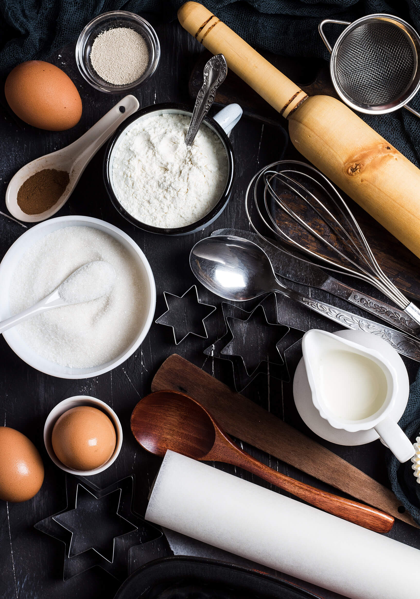

Dirty up the Kitchen with Us

Lesha's Cakes and Bakes
Some of our favoite tips for the Kitchen

I tend to not be a perfect baker; I eyeball measurements a lot because I am just trying to cut corners to get the job done quicker. This can be a big no-no in the baking world! We are here to help you find more enjoyment in your kitchen. My boys often pull a chair up to the counter to help me out and it really does bring so much JOY (and mess) to the kitchen. We want you to find ways that work for you and teach you a thing or two along the way.
One of my first recommendations is definitely to go out and get yourself a simple kitchen scale. It really does make measuring ingredients so much simpler so that you can get to eating your delicious creation quicker.